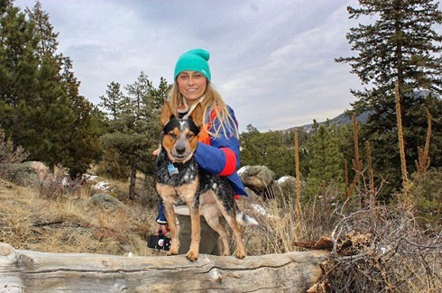

Alexandra
Alexandra Mendez born Mehl, my father was a German immigrant who moved to the States when he was in his 20’s. He settled in Dallas while working as a photographer and roadie for the rock n’ roll bands of the 80’s. He soon met my mother and married her a couple of years after their first date. I am the oldest of three children, all girls. We spent the first chapter of our childhood growing up in Garland, Texas. After my parents divorced, we moved to Bedford, where I met you (Cameron) and finished high school. I moved onto TWU in Denton where I got my bachelor's in early childhood education and have been teaching in Keller ISD up until this last year. I am now working as a roofing sales contractor and am enjoying the change in pace.
